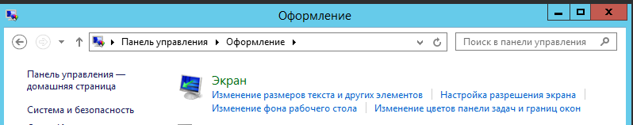

Администрирование Windows Server 2019
Выполните действия, указанные на странице
10/13
- Вновь откройте диалоговое окно «Параметры экранной заставки». Теперь вы не сможете изменить время ожидания и отображение экранной заставки
- В контейнере «Объекты групповой политики» консоли «Управление групповой политикой» выберите объект «Стандарты + ваша компания»
- В секции «Связи» вкладки «Область» показаны связи GPO. Перейдите на вкладку «Параметры», чтобы просмотреть отчет о параметрах в объекте GPO. Если включена конфигурация повышенной безопасности Internet Explorer, подтвердите добавление содержимого веб-узла «about:security_mmc.exe» в зону надежных узлов (Trusted Sites)
- Щелкните ссылку «Показать все» в верхней части отчета, чтобы развернуть все секции отчета. Как видите, в отчет добавлены комментарии к параметрам политики
